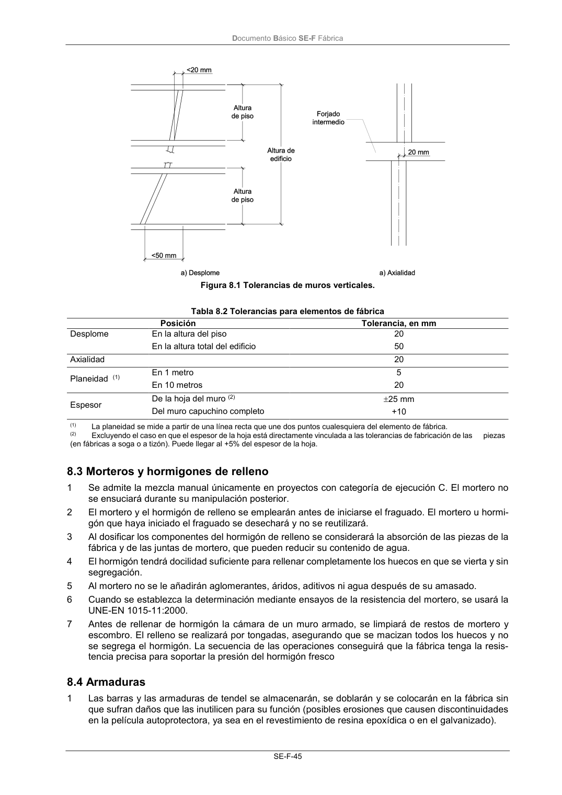

DB-SE-F · 8.3 Morteros y hormigones de relleno · 8.4 Armaduras · versión 2019-12-20
SHA256: e3e0805c3b4c307519c26dc34c3fdbf143d842edd013c91b0f52d2c73403d91c · página física 49 de 70 · métodos de encabezado
solo si están cotejados.
Formatos: Markdown · JSON de bloques · PDF p. 49 · imagen PNG
Documento Básico SE-F Fábrica SE-F-45 Figura 8.1 Tolerancias de muros verticales. Tabla 8.2 Tolerancias para elementos de fábrica Posición Tolerancia, en mm Desplome En la altura del piso En la altura total del edificio 20 50 Axialidad 20 Planeidad (1) En 1 metro En 10 metros 5 20 Espesor De la hoja del muro (2) Del muro capuchino completo 25 mm +10 (1) La planeidad se mide a partir de una línea recta que une dos puntos cualesquiera del elemento de fábrica. (2) Excluyendo el caso en que el espesor de la hoja está directamente vinculada a las tolerancias de fabricación de las piezas (en fábricas a soga o a tizón). Puede llegar al +5% del espesor de la hoja. 8.3 Morteros y hormigones de relleno 1 Se admite la mezcla manual únicamente en proyectos con categoría de ejecución C. El mortero no se ensuciará durante su manipulación posterior. 2 El mortero y el hormigón de relleno se emplearán antes de iniciarse el fraguado. El mortero u hormi- gón que haya iniciado el fraguado se desechará y no se reutilizará. 3 Al dosificar los componentes del hormigón de relleno se considerará la absorción de las piezas de la fábrica y de las juntas de mortero, que pueden reducir su contenido de agua. 4 El hormigón tendrá docilidad suficiente para rellenar completamente los huecos en que se vierta y sin segregación. 5 Al mortero no se le añadirán aglomerantes, áridos, aditivos ni agua después de su amasado. 6 Cuando se establezca la determinación mediante ensayos de la resistencia del mortero, se usará la UNE-EN 1015-11:2000. 7 Antes de rellenar de hormigón la cámara de un muro armado, se limpiará de restos de mortero y escombro. El relleno se realizará por tongadas, asegurando que se macizan todos los huecos y no se segrega el hormigón. La secuencia de las operaciones conseguirá que la fábrica tenga la resis- tencia precisa para soportar la presión del hormigón fresco 8.4 Armaduras 1 Las barras y las armaduras de tendel se almacenarán, se doblarán y se colocarán en la fábrica sin que sufran daños que las inutilicen para su función (posibles erosiones que causen discontinuidades en la película autoprotectora, ya sea en el revestimiento de resina epoxídica o en el galvanizado).
